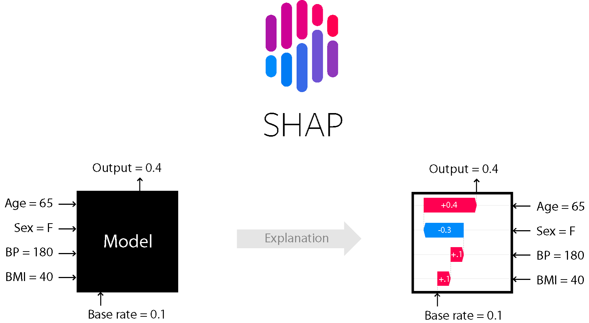

Explainable AI (XAI)
Hinter Explainable AI (XAI) verbirgt sich das Bestreben die «Black-Boxes» der Künstlichen Intelligenz in transparente und interpretierbare Algorithmen zu transformieren.
Hinter Explainable AI (XAI) verbirgt sich das Bestreben die «Black-Boxes» der Künstlichen Intelligenz in transparente und interpretierbare Algorithmen zu transformieren.
Nachfolgend drei Beispiele für Packages, welche bei der Erklärbarkeit von Modellen unterstützen können.
SHAP (SHapley Additive ExPlanations), eine der heute beliebtesten Methoden, ist ein auf der Spieltheorie basierender Ansatz zur Erklärung der Ergebnisse eines ML-Modells.
Lime war eine der ersten Techniken, die im Bereich der Erklärbarkeit eine gewisse Popularität erlangte. Lime steht für Local interpretable model agnostic explanations. Derzeit hilft Lime, Vorhersagen für Tabellendaten, Bilder und Textklassifikatoren zu erklären.
ExplainerDashboard is a library for quickly building interactive dashboards for analyzing and explaining the predictions and workings of (scikit-learn compatible) machine learning models, including xgboost, catboost and lightgbm. This makes your model transparant and explainable with just two lines of code.
Das Forschungsgebiet und die Open-Source-Beiträge in Bezug auf XAI entwickeln sich in rasantem Tempo, was im Einklang damit steht, wie wichtig es ist, unsere Modellentscheidungen zu erklären, mögliche Fehler zu finden und zu validieren, insbesondere wenn KI-Modelle in unserem täglichen Leben Einzug finden.
Durch Explainable AI wird das Vertrauen in KI-basierte Lösungen gestärkt, was wiederum ihre Akzeptanz beschleunigen wird.
